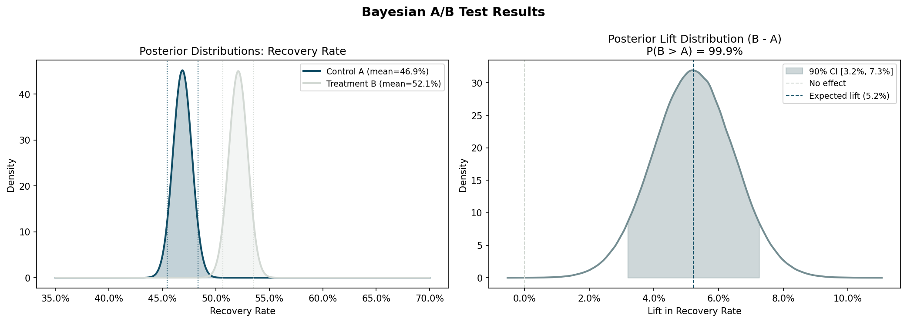

Payment Recovery A/B Testing in Healthcare Billing
Updated March 2026
Does the way you ask matter as much as what you're asking for?
Two emails land in your inbox. One says: your payment of $X is overdue. The other says: we want to make sure nothing gets in the way of your care. Both are asking for the same thing, but is one of them more effective? This project finds out which one, and by how much.
The findings were measured across 6,355 members and the result is a messaging deployment recommendation that tells you who to send it to first and why.
The approach works across industries. Healthcare billing, consumer lending, SaaS renewals, fintech collections. Wherever a business needs to reach a customer at a moment of financial hardship, the question is the same: does how you say it change whether they pay?.
The two messages:
Control (A): Transactional "Your payment of $X is overdue."
Treatment (B): Empathetic "We want to make sure nothing gets in the way of your care."
How the Test Worked
The goal is to identify the members most likely to pay, and then find out whether a softer, more human message is what actually gets them to do it.
The population for this test comes from the UCI Default of Credit Card Clients dataset, a publicly available dataset of 30,000 real-world credit card holders. Members with one or two months of missed payments were selected as a proxy for a healthcare billing population, giving us 6,355 members who were recently delinquent enough that outreach could still make a difference.
The Methodology
This project uses a real-world credit card dataset as a stand-in for a healthcare billing population, and the two messages were never actually sent. Recovery outcomes were simulated using real behavioral patterns: members with a history of missed payments were assigned lower recovery probabilities, first-time missers were assigned higher ones, and the treatment group was given a modest edge based on the assumption that empathetic messaging outperforms transactional messaging for certain member types.
That assumption drives the entire result, and it has not been validated in a live environment yet. That is exactly what the phased rollout is designed to do. Run Phase 1 with real messages and real members, measure what happens, and let that data confirm or challenge the assumption before any broader commitment is made.
The experiment design, segmentation logic, statistical model, and rollout sequence are all built to work with real observed data. Swap the simulated outcomes for live deployment results and the entire analysis runs the same way.
Results at a Glance
-
The empathetic message wins
There is a 99.9% probability that empathetic messaging outperforms transactional messaging. The model evaluated over one million simulated outcomes to arrive at that number.
-
The model recovers roughly 5 more payments for every 100 members contacted
This translates to a +5.2% "lift". This is a modest lift until you multiply it across thousands of members and twelve months of outreach. -
The revenue impact ranges from $542K to $1.2M annually
Three scenarios were modeled: conservative, expected, and optimistic. The range exists because no statistical result is a single fixed number. It reflects the natural uncertainty in the findings. Even the conservative case represents a meaningful return on a low-cost intervention. -
A phased rollout captures 80% of that opportunity right away
Rather than deploying to everyone at once, the recommendation sequences deployment by strength of evidence. The segments with the clearest results go first. The rest are monitored before committing.
{kind=link}
Why Segment?
Not all members are the same. Treating a first-time missed payment the same as a chronic delinquent is like sending the same message to a first-time speeder and a repeat offender. The situations are different, the motivations are different, and the right approach is different.
Segmentation divides the population into meaningful groups and measures the effect of the empathetic message separately for each one, rather than relying on a single blended average that masks what is actually happening beneath the surface.
Here is what the data found:

- First-time missers: +9.5% lift: The strongest finding in the project. These members are most responsive to a warmer tone, likely because a missed payment is out of character for them.
- Repeat 1-month delinquents: A modest but consistent improvement. Worth deploying to, but not the priority.
- Repeat 2-month delinquents: Promising on the surface, but the statistical range of plausible outcomes includes zero. That means the effect may not be real. More data is needed before committing here.
- High-risk chronic delinquents (+2.2% lift): The evidence is not strong enough to act on. This group likely needs a different kind of intervention entirely, not just a different message
The Recommendatoin
- Phase 1, deploy now: First-time missers. This is the clearest decision in the project. The lift is the highest of any segment at +9.5%.
- Phase 2, deploy at 30 days: Repeat 1-month delinquent: The evidence is strong and the lift is consistent.
- Phase 3, monitor: Repeat 2-month delinquents: The result is promising but the statistical range of outcomes just barely includes zero. Do not deploy yet. Let Phase 1 and Phase 2 real-world data build the case first.
- Hold: High-risk chronic delinquents: High-risk chronic delinquents. The data does not support deployment. A different intervention is likely needed for this group.
This approach captures 80% of the expected revenue opportunity while staying grounded in what the evidence actually supports. The remaining 20% is not abandoned, but is waiting for stronger data before a commitment is made.

What's inside this project
Part 1: Data Prep & EDA
How 30,000 raw credit records were cleaned, filtered, and shaped into an experiment-ready population of 6,355 members. Includes the key data findings that shaped every decision that followed.
Part 3: Evidence-Driven Rollout
How the statistical results translate into a phased deployment plan, a revenue impact model, and a concrete recommendation leadership can act on.Part 2: Bayesian A/B Test
How the two messages were compared, how the winner was determined, and where the effect was strongest across different member segments.